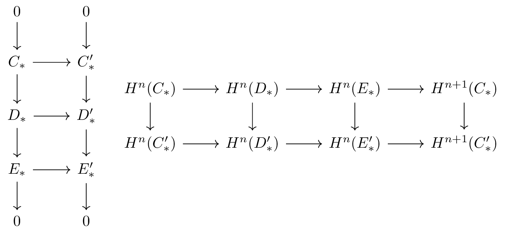

Sheaves and Cohomology
Table of Contents
The PDF version of this page can be downloaded by replacing html in the its address by
pdf.
For example /html/sheaf-cohomology.html should become /pdf/sheaf-cohomology.pdf.
1 Sheaf and Presheaf
Let \(M\) be a manifold, a sheaf over \(M\) is a couple \((\mathcal{S}, \pi)\) with \( \mathcal{S}\) a topologized space and \(\pi: \mathcal{S}\longrightarrow M\) a local homeomorphism such that each stalk \( \pi^{-1}(m) \) is a \(R\)-module.
A presheaf is a way to associate each open set \(U\subset M\) a \( R \)-module \( \mathcal{S}(U) \) and morphisms \( \iota_{V,U}: \mathcal{S}(U) \longrightarrow \mathcal{S}(V)\) which satisfy cocycle condition.
- In spirit, by taking section and taking germ (direct limit) the two objects are the
same. Technically, in order to obtain an equivalent condition, one has to restrict to
presheaves that satisfy: For every covering \( \{U_i\} \) of \( U \)
- \(f=g\) in \( \mathcal{S}(U) \) if and only if \( \iota_{U_i, U} f = \iota_{U_i, U} g \) for every \(i\).
- For every family \( f_i \in \mathcal{S}(U_i) \) that satisfies \( \iota_{U_i\cap U_j, U_i}f_i = \iota_{U_j\cap U_i, U_j}f_j \) there exists an \( f \in \mathcal{S}(U) \) such that \( \iota_{U_i,U} f = f_i \).
- Usual operation on modules can be extend to sheaves. The tensor product, for example, can be defined on presheaves then pass to sheaves (in order not to deal with the topology)
1.1 Image, kernel and exact sequence - An algebraist's remark
To write
1.2 Direct and reverse image of sheaf, ringed space
To write
2 Cohomology of complexes
2.1 Construction and naturality
A complex is a sequence \( C_0 \longrightarrow C_1 \longrightarrow \dots \longrightarrow C_n \longrightarrow \dots \) such that the composition of two consecutive arrows vanishes. The cohomology \( H^n(C_*) \) is defined by \( H^n(C_*) = \ker d_{n}/ \im d_{n-1} \).
Then Snake lemma implies
If \( 0 \longrightarrow C_* \longrightarrow D_* \longrightarrow E_* \longrightarrow 0 \) is a short exact sequence of complexes, then one has
- Long exact sequence: \[\dots \longrightarrow H^n(C_*) \longrightarrow H^n(D_*) \longrightarrow H^n(E^*) \longrightarrow H^{n+1}(C^*) \longrightarrow \dots \]
- Any morphism between short exact sequences gives rise to a morphism between long exact sequences.

Figure 1: Morphism between short exact sequences gives rise to a morphism between long exact sequences. [fig:morph-short-sequence]
The algebraic machinery behind Poincaré lemma is the following
Let \(f\) and \(g\) be two morphism between complexes \( \{C_*\}, \{D_*\} \) such that there exists a diagonal morphism \( \epsilon: C_n \longrightarrow D_{n-1} \) that satisfies \(f-g = d_D \circ \epsilon = \epsilon \circ d_C\) then \( f \) and \( g \) induce the same morphism from \( H^n(C_*) \longrightarrow H^n(D_*) \).
Figure 2: Homotopy operator \( \varepsilon \). [fig:homotopy-operator].
2.2 Multiplicative structure
Given two complexes \( \{C_*\},\{D_*\} \), one can define their tensor product as \( E_* = C_* \otimes D_* \) with \[ 0 \longrightarrow C_0\otimes D_0 \longrightarrow (C_0\otimes D_1) \oplus (C_1\otimes D_0) \longrightarrow \dots \] with the tensor coboundary \( d_E = d_C\otimes1 + (-1)^p\otimes d_D \) where \(p\) is the degree of the $C$-components. One then has the following algebraic result
If \(R\) is a field then one has the following decomposition \[ \oplus_k \left( H^k\left(C_*\right) \otimes_k H^{n-k}\left(D_*\right) \right) \stackrel{\simeq}{\to} H^n\left( C_* \otimes_k D_* \right) \]
3 Axiomatic cohomology theory
Let \(M\) be a manifold, a cohomology theory on \(M\) is a functor from the category of sheaves over \(M\) to the category of graded \( R \)-module such that
- Each sheaf \( \mathcal{S} \) corresponds to a graded module sequence \( H^n(M,\mathcal{S}) \) with \( H^0(M,\mathcal{S}) = \Gamma(S) \) the module of global sections of \( \mathcal{S} \) and \( H^{n}(M, \mathcal{S}) = 0 \) if \( n<0 \). Morphisms between sheaves are transformed to morphisms between cohomology.
- Any short exact sequence \( 0 \longrightarrow \mathcal{S}' \longrightarrow \mathcal{S} \longrightarrow \mathcal{S}'' \longrightarrow 0\) gives rise to a long exact sequence \[ \dots \longrightarrow H^n(M, \mathcal{S}') \longrightarrow H^n(M, \mathcal{S}) \longrightarrow H^n(M, \mathcal{S}'') \longrightarrow H^{n+1}(M, \mathcal{S}') \longrightarrow \dots \] One also has the naturality for such long sequence, i.e. for the coboundary map \( H^n(M, \mathcal{S}'') \longrightarrow H^n(M, \mathcal{S}') \).
- Cohomology of a fine sheaf is 0.
A sheaf \( \mathcal{S} \) is called fine if for every locally finite open cover \( U_i \) of \( M \), there exists automorphisms \( f_i \) of \( \mathcal{S} \) such that \( \supp f_i \subset U_i \) and \( \sum f_i = Id_\mathcal{S} \).
3.1 Existence and Uniqueness
The next theorem will give a cohomology theory given that one has a resolution, i.e. an exact sequence \[ 0 \longrightarrow K \longrightarrow \mathcal{C}_0 \longrightarrow \mathcal{C}_1 \longrightarrow \dots \] where \( K \) is the constant sheaf \( M\times R\). Such a resolution does exist, the most natural one may be the de Rham resolution, which gives de Rham cohomology that we will discuss later.
Let \( \mathcal{C}_* \) be a resolution of \(M\), then the cohomology of the following complex \[ 0 \longrightarrow \Gamma(\mathcal{C}_0 \otimes \mathcal{S}) \longrightarrow \Gamma(\mathcal{C}_1 \otimes \mathcal{S}) \longrightarrow \dots \] for an arbitary sheaf \( \mathcal{S} \) is a cohomology theory.
It worths mentioning that the intuition behind such construction is the half-exactness of operations \( \mathcal{A} \mapsto \mathcal{A}\otimes \mathcal{S} \) and \( \mathcal{A}\mapsto \Gamma(A) \). For example, one can show, using the following exactness, that fine sheaves are of trivial cohomology.
- "Tensoring" functor is right exactness, i.e. a short exact sequence \( 0 \longrightarrow \mathcal{C}' \longrightarrow \mathcal{C} \longrightarrow \mathcal{C}'' \longrightarrow 0 \) induces \[ \mathcal{C}'\otimes \mathcal{T} \longrightarrow \mathcal{C}\otimes \mathcal{T} \longrightarrow \mathcal{C}''\otimes \mathcal{T} \longrightarrow 0. \] Moreover, if \( \mathcal{C}'' \) or \(\mathcal{T}\) is torsionless, one has \[ 0 \longrightarrow \mathcal{C}'\otimes \mathcal{T} \longrightarrow \mathcal{C}\otimes \mathcal{T} \longrightarrow \mathcal{C}''\otimes \mathcal{T} \longrightarrow 0. \]
- \(\Gamma\) fuctor is left exact, i.e. a short exact sequence \( 0 \longrightarrow \mathcal{C}' \longrightarrow \mathcal{C} \longrightarrow \mathcal{C}'' \longrightarrow 0 \) induces \[ 0 \longrightarrow \Gamma(\mathcal{C}') \longrightarrow \Gamma(\mathcal{C}) \longrightarrow \Gamma(\mathcal{C}''). \] Moreover, if \( \mathcal{C}'\) is fine then \[ 0 \longrightarrow \Gamma(\mathcal{C}') \longrightarrow \Gamma(\mathcal{C}) \longrightarrow \Gamma(\mathcal{C}'') \longrightarrow 0. \]
- If \( \mathcal{S} \) or \( \mathcal{T} \) is fine, then \( \mathcal{S}\otimes \mathcal{T} \) is fine.
One might note that such a cohomology depends a priori on the resolution \( \mathcal{C}_* \), the following result claims that in fact any resolution gives the same theory.
Any two cohomology theory \( \mathcal{H}, \tilde{\mathcal{H}} \) has \( \#Func(\mathcal{H}, \tilde{\mathcal{H}}) =1 \), therefore the two are naturally isomorphic.
A consequence of uniqueness of cohomology theory is the following. From the construction
in Theorem thm:existence-cohomology, given a sheaf \(
\mathcal{S} \) of \( R_2 \)module and \( R_1 \) is a subring of \( R_2 \) then the
cohomology \( H^*(M, \mathcal{S}) \) of \( \mathcal{S} \) can be defined in the category
of \( R_1 \)-sheaves or \( R_2 \)-sheaves, noted by the \( R_i \)-modules \( H^*(M,
\mathcal{S})_{R_i} \). Then \(H^*(M, \mathcal{S})_{R_2}\) is isomorphic to \( H^*(M,
\mathcal{S})_{R_1} \) as \( R_1 \)-modules.
By this reason, the base ring \( R \) is not expressed explicitly in the notation \( H^*(M, \mathcal{S}) \).
It is straight-forward to see that the computation of cohomology is much simplified if one can find a fine resolution \( \mathcal{C}_n \) of \( \mathcal{S} \), i.e. fine sheaves \( \mathcal{C}_n \) such that \( 0 \longrightarrow \mathcal{S}\longrightarrow \mathcal{C}_0 \longrightarrow \mathcal{C}_1 \longrightarrow \dots \)
If \( 0 \longrightarrow \mathcal{S}\longrightarrow \mathcal{C}_0 \longrightarrow \mathcal{C}_1 \longrightarrow \dots \) is a fine resolution of \( \mathcal{S} \) then \[ H^n(M, \mathcal{S}) = H^n(\Gamma(\mathcal{C}_*)) \]
Let \( M \) be a complex manifold and \( \Omega^p \) be the sheaf of holomorphic \( p \)-forms, i.e. form that are locally \( \sum_{|I|=p} h_I(z)dz^I \) with \( h_I \) holomorphic. The Dolbeault-Grothendieck lemma gives us exactly the following resolution of \( \Omega^p \): \[ 0 \longrightarrow \Omega^p \longrightarrow \Omega^{p,0} \longrightarrow \Omega^{p,1} \longrightarrow \dots \] where \( \Omega^{p,q} \) are sheaves of \( C^\infty \) forms of type \( (p,q) \). Theorem thm:fine-resolution gives \[ H^q(M,\Omega^p) = H^q(\Gamma(\Omega^{p,*})) =: H^{p,q}_{\bar \partial}(M), \] called Dolbeault cohomology of \( M \)
3.2 Multiplicative structure
If each stalk \( \mathcal{S}(x) \) is more than an \( R \)-module but an \( R \)-algebra, then one can endow \( H^n(M, \mathcal{S}) \) with a multiplicative structure that it a graded algebra. This structure come from the tensor product of the complex \( \Gamma(\mathcal{C}_n\otimes S) \) with itself and from the natural inclusion \[ \Gamma(\mathcal{C}_p\otimes\mathcal{S}) \otimes \Gamma(\mathcal{C}_q\otimes\mathcal{S}) \longrightarrow \Gamma(\mathcal{C}_{p+q} \otimes \mathcal{S}). \] which give \( H^p(M,\mathcal{S})\otimes H^q(M, \mathcal{S}) \longrightarrow H^{p+q}(M, \mathcal{S}) \).
3.3 Examples: de Rham cohomology
Taking \( \mathcal{C_n} = \Omega^n(M) \) the sheaves of germs of \( n \)-forms on \( M \), then by Theorem thm:fine-resolution one obtains the de Rham cohomology \( H^n(M, \mathbb{R}\). By the same way, one can construct Alexander–Spanier cohomology and singular cohomology.
The unique natural transformation from de Rham cohomology to singular cohomology is given by \( \omega_n \mapsto \left(\Delta_n \mapsto \int_{\Delta_n}\omega_n \right) \) and sends the wedge product in de Rham cohomology to cup-product in singular cohomology.
4 Čech cohomology
Čech cohomology is another important cohomology whose construction is not based on a resolution. Čech cohomology \( \check{H}(M, \mathcal{S}) \) is defined as the direct limit of the following \( \check{H}(M,\mathcal{S},\mathcal{U}) \) when \( \mathcal{U} \) becomes finer as an open cover of \( M \).
Let \( \mathcal{U} \) be an open cover of \( M \). A \( n \)-cocyle in \( C_{n,\mathcal{U}} \) is defined as a mapping \[ \sigma: (U_0,\dots, U_n) \mapsto \sigma(U_0,\dots, U_n) \in \mathcal{S}\left(\cap_{i=0}^n U_i\right) \] and the coboundary \( d\sigma \in C_{n+1,\mathcal{U}} : (U_0,\dots, U_{n+1}) \mapsto \sum_i \iota_{\cap U_i}(-1)^i \sigma (U_0,\dots,\check{U_i},\dots, U_{n+1}) \). The cohomology of this complex is noted as \( \check{H}^*(M, \mathcal{S},\mathcal{U}) \).
Let \( \mathcal{V} \) be a finer cover of \( M \), i.e. every open \( V_i \) in \( \mathcal{V} \) is included in an element \( U_{j_i} \) of \( \mathcal{U} \), there exists a natural map \( \check{H}^*(M, \mathcal{S},\mathcal{V}) \longrightarrow \check{H}^*(M, \mathcal{S},\mathcal{U}) \) induced by the \( C_{n,\mathcal{V}} \longrightarrow C_{n,\mathcal{U}} \) which depends on the refining map \( j \). Using Theorem thm:prism-operator, one can prove that the induced map between cohomology is however independent of \( j \).
To actually use Čech cohomology, one needs to get rid of the direct limit, very often with the following theorem, the proof of which uses the notion of flasque sheaf and 5-lemma.
Let \( \mathcal{U} \) be a open cover on \( M \) and \( \mathcal{S} \) is a sheaf on \( M \) such that every intersection \(V = U_{i_1}\cap \dots U_{i_k} \) has \( H^p(V, \restr{\mathcal{S}}{V})=0 \) then \[ \check{H}^*(M, \mathcal{S}, \mathcal{U}) = \check{H}^*(M,\mathcal{S}) \]
4.1 Example: Picard group
Let \( X \) be a complex manifold. A vector bundle of \( X \) is called holomorphic iff the projection map is holomorphic.
A holomorphic vector bundle is different from a vector bundle with holomorphic transition functions. In 1 dimension for example, an (differential) isomorphic class of line bundle with holomorphic transition can be encoded as an element of \( H^1(X, \mathbb{C}) \). Meanwhile, an (complex) isomorphic class of holomorphic line bundle is an element of \( H^1(X, \mathcal{O}^*) \).
The Picard group \( \text{Pic}(X) \) is the commutative group of holomorphic line bundles over \( X \) with the tensor product. Another way to regard \( \text{Pic}(X) \) is by \( \text{Pic}(X) = \check{H}^1(X, \mathcal{O}^*) \).
4.2 Example: first Chern class in \(H^2(X, \mathbb{Z})\)
The following short exact sequence of \( \mathbb{Z} \)-module \[ 0 \longrightarrow \mathbb{Z} \longrightarrow \mathcal{O}_X \longrightarrow \mathcal{O}_X^* \longrightarrow 0 \] gives the long exact sequence: \[ H^1(X, \mathcal{O}_X) \longrightarrow H^1(X, \mathcal{O}_X^*) \longrightarrow H^2(X, \mathbb{Z}) \longrightarrow \dots \] Since \(H^1(X, \mathcal{O}_X^*)\) is Picard group, the first Chern class \(c_1(L)\) of a holomorphic line bundle \(L\) is the image of \(L\) in \(H^2(X, \mathbb{Z})\).
4.3 Example: from divisor to Picard group
An analytic subvariety \( Y \) of a complex manifold \( X \) is a closed set such that locally at each \( y\in Y \), \( Y \) is zero of a holomorphic function.
A analytic hypersurface \( Y \) can be completely encoded by a family \( ( U_i, f_i) \) where \( f_i\) is a meromorphic function on \( U_i \) with \( U_i\cap Y \) its zeros. The latter is a global section of \( H^1(X, K^*_X/ \mathcal{O}^*_X) \) where \( K_X^* \) denotes the sheaf of meromorphic germs that is not the zero germ and \( \mathcal{O}_X^* \) denotes the sheaf of holomorphic germs that is non-zero at every point (invertible). These are sheaves of \( \mathbb{Z} \)-modules.
This correspondance is not one-to-one, as \( 2.s = s^2 \in H^1(X, K^*_X/\mathcal{O}_X^*) \) describe the same hypersurface. This phenomenon can be avoid with the notion of divisor.
An irreducible hypersurface of \( X \) is a analytic hypersurface that is not union of smaller analytic hypersurfaces.
A divisor \( D \) on \( X \) is a formal sum \( D = \sum a_i Y_i \) where \( a_i\in \mathbb{Z} \) and \( Y_i \) is an irreducible hypersurface. \( D \) is called effective if and only if \( a_i \geq 0 \).
Let \( f \) be a meromorphic function on \( X \), the principal divisor associated to \( f \) is defined by \( (f) = \sum \ord_{f,Y}Y \) where \( \ord \) denotes the order of \( f \) on an irreducible hypersurface \( Y \)
Note that an irreducible hypersurface \( Y \) does not necessarily induce irreducible germs in every point, but only almost all points (denoted by \( Y_{reg} \)). Therefore, one can still define the order \( ord_{f,Y} \) of a meromorphic function \( f \) on \( Y \) as the order in any regular points.
The next theorem follows immediately from the above discussion.
- Given a divisor \( D = \sum a_i Y_i\), there exists a unique (isomorphic class of) holomorphic line bundle \( L = \mathcal{O}(D) \) such that \( D =Z(s) = \sum \ord_{s,Y} Y\), the zero with multiple of \( s \), where \( s \) a global section of \( L \). Given an open cover \( U_i \) fine enough, this line bundle is defined such that the functions \(s_i = \prod f_j^{\alpha_j} \) where \( Y_j = Z(f_j)\) in \( U_i \) form a global section.
- On the other hand, given a line bundle \( L \) and any global section \( s \), there exists a divisor \( D \) such that \( L = \mathcal{O}(D) \).
- One has group morphism \( \text{Div}(X) \longrightarrow \text{Pic}(X) \) whose kernel is the subgroup of principal divisors and every \( L\in \text{Pic}(X) \) with a nontrivial global section is image of an effective divisor.
The morphism \( \text{Div}(X) \longrightarrow \text{Pic}(X) \) can also be constructed by the following short exact sequence \[ 0 \longrightarrow \mathcal{O}_X^* \longrightarrow K_X^* \longrightarrow K_X^*/ \mathcal{O}_X^* \longrightarrow 0 \] which gives the long exact sequence \[ H^0(X,K_X^*) \longrightarrow \text{Div}(X) = H^0(K_X^*/\mathcal{O}_X^*) \longrightarrow H^1(X, \mathcal{O}_X^*) = \text{Pic}(X) \longrightarrow \dots \] This shows clearly that the kernel of the above group morphism is the group of principal divisors.